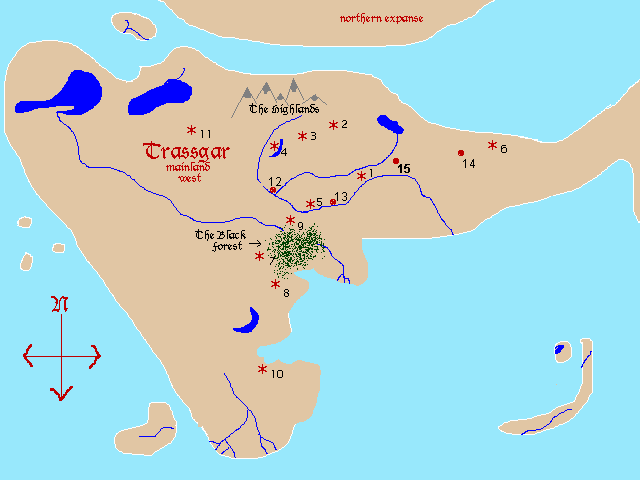

Trassgar: The World
== part of
The Trassgar Saga
==
Webdate: April 23 2010

Known cities of Trassgar
Furterville
Birith
Outpost
Aquus Keep
Himm
Kahdyr
Krom
Cysker
Forest's Edge
Cactus Ridge
Ice City
Two Rivers' Forge
Lanagg Post
Ash
Sage
Area maps
Scroll found in 'Staff Quest'